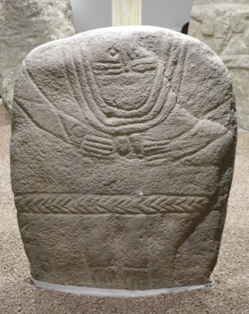

Nos actions
Une association pour
explorer le patrimoine textile.
L’association Neotisse fait découvrir les savoir-faire textiles anciens par les interventions, les démonstrations et la médiation culturelle.

Les rencontres de l’association

L’association crée la rencontre entre les publics et les savoir-faire textiles anciens. Une intervention peut prendre place dans un établissement scolaire, un musée, un lieu culturel ou un événement.
Pour quels publics ?
- Scolaires
- centres de loisirs
- structures culturelles
- grand public
Démonstrations de savoir-faire

Observer la préparation des fibres, le filage, le tissage ou la teinture permet de comprendre les étapes de fabrication d’un textile. Les gestes et les outils deviennent des points de départ pour échanger.
Pour quels publics ?
- Visiteurs de musées
- événements culturels
- familles
- groupes
Médiation culturelle

La matière donne un accès concret à l’histoire. Notre association propose une découverte accessible, en reliant les gestes, les objets et les questions des participants.
Pour quels publics ?
Musées, établissements culturels, associations et publics scolaires.
Imaginer une intervention ↗Archéologie expérimentale

Explorer un procédé, essayer un geste et observer le résultat : l’expérimentation aide à réfléchir aux techniques textiles anciennes. Elle distingue ce que l’on observe, ce que l’on suppose et ce qui reste à comprendre.
Pour quels publics ?
Publics curieux, lieux de culture et structures de médiation scientifique.
Imaginer une intervention ↗Les savoir-faire en images
Des gestes, des matières et des échanges : un aperçu des activités de Neotisse.


Expérimenter autour des ceintures des statues-menhirs
Le dialogue entre les représentations archéologiques et la pratique textile invite à explorer les techniques et les formes. Ces images montrent les essais et les pièces réalisés dans ce cadre.



Projets réalisés & actualités
Retrouvez les projets documentés, les retours d’intervention et les nouvelles de l’association.
Les nouvelles réalisations seront présentées ici après validation.